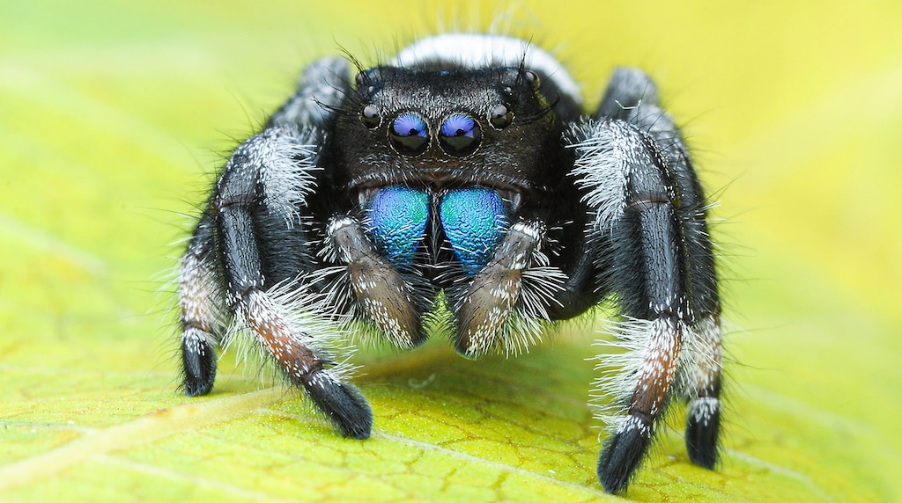

crawl
A small corner of the web about spiders, crawling, and the webs they weave.

Spider Facts
- Spiders are arachnids, not insects — they have eight legs and two body segments instead of six legs and three.
- There are over 50,000 described spider species, and researchers describe hundreds more every year.
- Not every spider spins a web. Jumping spiders and wolf spiders hunt their prey down on foot.
- Spider silk is, weight for weight, tougher than steel, and a single spider can produce several different kinds.
- Most spiders have eight eyes, though some cave-dwelling species have none at all.
- Spiders cannot chew. They inject digestive enzymes into their prey and drink the liquefied result.
- Some spiderlings "balloon" — they release a strand of silk and let the wind carry them for miles.
- The Goliath birdeater is the heaviest spider, but the giant huntsman has the widest leg span at about 30cm.
Web Types
| Type |
Builder |
| Orb web |
Garden spiders |
| Tangle web |
Cobweb spiders |
| Funnel web |
Grass spiders |
| Sheet web |
Money spiders |
Nothing here but spiders.